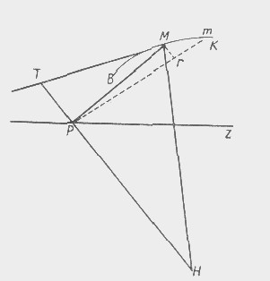

Dialectics of Nature. Frederick Engels 1883
Source: Dialectics of Nature, pp. 257-272;
First Published: by Progress Publishers, 1934, 6th printing 1974;
Translated: from the German by Clemens Dutt;
Transcribed: by Andy Blunden, 2006.
The so-called axioms of mathematics are the few thought determinations which mathematics needs for its point of departure. Mathematics is the science of magnitudes; its point of departure is the concept of magnitude. It defines this lamely and then adds the other elementary determinations of magnitude, not contained in the definition, from outside as axioms, so that they appear as unproved, and naturally also as mathematically unprovable. The analysis of magnitude would yield all these axiom determinations as necessary determinations of magnitude. Spencer is right in as much as what thus appears to us to be the self-evidence of these axioms is inherited. They are provable dialectically, in so far as they are not pure tautologies.
Mathematics. Nothing appears more solidly based than the difference between the four species of arithmetical operations, the elements of all mathematics. Yet right at the outset multiplication is seen to be an abbreviated addition, and division an abbreviated subtraction, of a definite number of equal numerical magnitudes; and in one case – when the divisor is a fraction – division is even carried out by multiplying by the inverted fraction. In algebraic calculation the thing is carried much further. Every subtraction (a-b) can be represented as an addition (-b+a), every division a/b as a multiplication a×1/b. In calculations with powers of magnitudes one goes much further still. All rigid differences between the kinds of calculation disappear, everything can be presented in the opposite form. A power can be put as a root (x2=√x4;), a root as a power (√x=x½). Unity divided by a power or root can be put as a power of the denominator (1/√x =x-½; 1/x3=x-3)
Multiplication or division of the powers of a magnitude becomes converted into addition or subtraction of their exponents. Any number can be conceived and expressed as the power of any other number (logarithms, y =ax). And this transformation of one form into the opposite one is no idle trifling, it is one of the most powerful levers of mathematical science, without which today hardly any of the more difficult calculations are carried out. If negative and fractional powers alone were abolished from mathematics, how far could one get?
(—.— =+, —/— =+, √-1, etc., to be expounded earlier.)
The turning point in mathematics was Descartes’ variable magnitude. With that came motion and hence dialectics in mathematics, and at once, too, of necessity the differential and integral calculus, which moreover immediately begins, and which on the whole was completed by Newton and Leibniz, not discovered by them.
Quantity and quality. Number is the purest quantitative determination that we know. But it is chock-full of qualitative differences. 1. Hegel, number and unity, multiplication, division, raising to a higher power, extraction of roots. Thereby, and this is not shown in Hegel, qualitative differences already make their appearance: prime numbers and products, simple roots and powers. 16 is not merely the sum of 16 ones, it is also the square of 4, the fourth power of 2. Still more. Prime numbers communicate new, definitely determined qualities to numbers derived from them by multiplication with other numbers; only even numbers are divisible by 2, and there is a similar determination in the case of 4 and 8. For 3 there is the rule of the sum of the figures, and the same thing for 9 and also for 6, in the last case in combination with the even number. For 7 there is a special rule. These form the basis for tricks with numbers which seem incomprehensible to the uninitiated. Hence what Hegel says (Quantity, p. 237) on the absence of thought in arithmetic is incorrect. Compare, however, Measure.[213]
When mathematics speaks of the infinitely large and infinitely small, it introduces a qualitative difference which even takes the form of an unbridgeable qualitative opposition: quantities so enormously different from one another that every rational relation, every comparison, between them ceases, that they become quantitatively incommensurable. Ordinary incommensurability, for instance of the circle and the straight line, is also a dialectical qualitative difference; but here it is the difference in quantity of similar magnitudes that increases the difference of quality to the point of incommensurability.
Number. The individual number becomes endowed with quality already in the numerical system itself, and the quality depends on the system used. 9 is not only 1 added together 9 times, but also the basis for 90, 99, 900,000, etc. All numerical laws depend upon and are determined by the system adopted. In dyadic and triadic systems 2 multiplied by 2 does not equal 4, but=100 or=11. In all systems with an odd basic number, the difference between odd and even numbers falls to the ground, e.g., in the system based on 5, 5=10, 10=20, 15=30. Likewise in the same system the sums of digits 3n of products of 3 or 9 (6=11, 9=14). Hence the basic number determines not only its own quality but also that of all the other numbers.
With powers of numbers, the matter goes still further: any number can be conceived as the power of any other number-there are as many logarithmic systems as there are whole and fractional numbers.
One. Nothing looks simpler than quantitative unity, and nothing is more manifold than it, as soon as we investigate it in connection with the corresponding plurality and according to its various modes of origin from plurality. First of all, one is the basic number of the whole positive and negative system of numbers, all other numbers arising by the successive addition of one to itself.
One is the expression of all positive, negative, and fractional powers of one: 12, √1, 1-2 are all equal to one.
It is the content of all fractions in which the numerator and denominator prove to be equal. It is the expression of every number that is raised to the power of zero, and therewith the sole number the logarithm of which is the same in all systems, viz.,=0. Thus one is the boundary that divides all possible systems of logarithms into two parts: if the base is greater than one, then the logarithms of all numbers more than one are positive, and of all numbers less than one negative; if it is smaller than one, the reverse is the case.
Hence, if every number contains unity in itself in as much as it is compounded entirely of ones added together, unity likewise contains all other numbers in itself. This is not only a possibility, in as much as we can construct any number solely of ones, but also a reality, in as much as one is a definite power of every other number. But the very same mathematicians who, without turning a hair, interpolate into their calculations, wherever it suits them, x0=1, or a fraction whose numerator and denominator are equal and which therefore likewise represents one, who therefore apply mathematically the plurality contained in unity, turn up their noses and grimace if they are told in general terms that unity and plurality are inseparable, mutually penetrating concepts and that plurality is not less contained in unity than unity is in plurality. How much this is the case we see as soon as we forsake the field of pure numbers. Already in the measurement of lines, surfaces, and the volumes of bodies it becomes apparent that we can take any desired magnitude of the appropriate order as unity, and the same thing holds for measurement of time, weight, motion, etc. For the measurement of cells even millimetres and milligrams are too large, for the measurement of stellar distances or the velocity of light even the kilometre is uncomfortably small, just as the kilogram for planetary or, even more so, solar masses, Here is seen very clearly what diversity and multiplicity is contained in the concept of unity, at first sight so simple.
Zero, because it is the negation of any definite quantity, is not therefore devoid of content. On the contrary, zero has a very definite content. As the border-line between all positive and negative magnitudes, as the sole really neutral number, which can be neither positive nor negative, it is not only a very definite number, but also in itself more important than all other numbers bounded by it. In fact, zero is richer in content than any other number. Put on the right of any other number, it gives to the latter, in our system of numbers, the tenfold value. Instead of zero one could use here any other sign, but only on the condition that this sign taken by itself signifies zero, =0. Hence it is part of the nature of zero itself that it finds this application and that it alone can be applied in this way. Zero annihilates every other number with which it is multiplied; united with any other number as divisor or dividend, in the former case it makes this infinitely large, in the latter infinitely small; it is the only number that stands in a relation of infinity to every other number. 0/0 can express every number between – ∞ and +∞, and in each case represents a real magnitude.
The real content of an equation first clearly emerges when all its members have been brought to one side, and the equation is thus reduced to zero value, as already happens for quadratic equations, and is almost the general rule in higher algebra. The function F (x, y)=O can then also be put equal to z, and this z, although it is =0, differentiated like an ordinary dependent variable and its partial derivative determined.
The nothing of every quantity, however, is itself quantitatively determined, and only on that account is it possible to calculate with zero. The very same mathematicians who are quite unembarrassed in reckoning with zero in the above manner, i.e., in operating with it as a definite quantitative concept, bringing it into quantitative relation to other quantitative concepts, clutch their heads in desperation when they read this in Hegel generalised as: the nothing of a something is a determinate nothing.
But now for (analytical) geometry. Here zero is a definite point from which measurements are taken along a line, in one direction positively, in the other negatively. Here, therefore, the zero point has not only just as much significance as any point denoted by a positive or negative magnitude, but a much greater significance than all of them: it is the point on which they are all dependent, to which they are all related, and by which they are all determined. In many cases it can even be taken quite arbitrarily. But once adopted, it remains the central point of the whole operation, often determining even the direction of the line along which the other points-the end points of the abscissae – are to be inserted. If, for example, in order to arrive at the equation of the circle, we choose any point of the periphery as the zero point, then the line of the abscissae must go through the centre of the circle. All this finds just as much application in mechanics, where likewise in the calculation of the motions the point taken as zero in each case forms the main point and pivot for the entire operation. The zero point of the thermometer is the very definite lower limit of the temperature section that is divided into any desired number of degrees, thereby serving as a measure both for temperature stages within the section as also for higher or lower temperatures. Hence in this case also it is a very essential point. And even the absolute zero of the thermometer in no way represents pure abstract negation, but a very definite state of matter: the limit at which the last trace of independent molecular motion vanishes and matter acts only as mass. Wherever we come upon zero, it represents something very definite, and its practical application in geometry, mechanics, etc., proves that - as limit - it is more important than all the real magnitudes bounded by it.
Zero powers. Of importance in the logarithmic series:
| 0 | 1 | 2 | 3log |
| 100 | 101 | 102 | 103. |
√—1. The negative magnitudes of algebra are real only in so far as they are connected with positive magnitudes and only within the relation to the latter; outside this relation, taken by themselves, they are purely imaginary. In trigonometry and analytical geometry, together with the branches of higher mathematics of which these are the basis, they express a definite direction of motion, opposite to the positive direction. But the sine and tangent of the circle can be reckoned from the upper right-hand quadrant just as well as from the lower right-hand quadrant, thus directly reversing plus and minus. Similarly, in analytical geometry, abscissae can be calculated from the periphery or from the centre of the circle, indeed in all curves they can be reckoned from the curve in the direction usually denoted as minus, (or) in any desired direction, and still give a correct rational equation of the curve. Here plus exists only as the complement of minus, and vice versa. But algebraic abstraction treats them (negative magnitudes) as real and independent, even outside the relation to a larger, positive magnitude.
Mathematics. To common sense it appears an absurdity to resolve a definite magnitude, e.g., a binomial expression, into an infinite series, that is, into something indefinite. But where would we be without infinite series and the binomial theorem?
Asymptotes. Geometry begins with the discovery that straight and curved are absolute opposites, that straight is absolutely inexpressible in curved, and curved in straight, that the two are incommensurable. Yet even the calculation of the circle is only possible by expressing its periphery in straight lines. For curves with asymptotes, however, straight becomes completely merged in curved, and curved in straight, just as much as the notion of parallelism: the lines are not parallel, they continually approach one another and yet never meet; the arm of the curve becomes more and more straight, without ever becoming entirely so, just as in analytical geometry the straight line is regarded as a curve of the first order with an infinitely small curvature. However large the x of the logarithmic curve may become, y can never=0.
Straight and curved in the differential calculus are in the last resort put as equal: in the differential triangle, the hypotenuse of which forms the differential of the arc (in the tangent method), this hypotenuse can be regarded
“as a small, quite straight line which is at the same time the element of the arc and that of the tangent"-no matter whether the curve is regarded as composed of an infinite number of straight lines, or also, “whether one considers it as a strict curve; since the curvature at each point M is infinitely small, the last ratio of the element of the curve to that of the tangent is evidently a ratio of equality.”
Here, therefore, although the ratio continually approaches equality, but asymptotically in accordance with the nature of the curve, yet, since the contact is limited to a single point which has no length, it is finally assumed that equality of straight and curved has been reached. (Bossut, Calcul différentiel et intégral, Paris, An VI, 1, p. 149.)[215] In polar curves[216] the differential imaginary abscissae are even taken as parallel to the real abscissae and operations based on this, although both meet at the pole; indeed, from it is deduced the similarity of two triangles, one of which has an angle precisely at the point of intersection of the two lines, the parallelism of which is the whole basis of the similarity! (Fig. 17.)[217]
When the mathematics of straight and curved lines has thus pretty well reached exhaustion a new almost infinite field is opened up by the mathematics that conceives curved as straight (the differential triangle) and straight as curved (curve of the first order with infinitely small curvature). O metaphysics!
Trigonometry. After synthetic geometry has exhausted the properties of a triangle, regarded as such, and has nothing new to say, a more extensive horizon is opened up by a very simple, thoroughly dialectical procedure. The triangle is no longer considered in and for itself but in connection with another figure, the circle. Every right-angled triangle can be regarded as belonging to a circle: if the hypotenuse =r, then the sides enclosing the right angle are sin and cos; if one of these sides =r, then the other =tan, the hypotenuse =sec. In this way the sides and angles are given quite different, definite relationships which without this relation of the triangle to the circle would be impossible to discover and use, and quite a new theory of the triangle arises, far surpassing the old and universally applicable, because every triangle can be resolved into two right-angled triangles. This development of trigonometry from synthetic geometry is a good example of dialectics, of the way in which it comprehends things in their interconnection instead of in isolation.
Identity and difference – the dialectical relation is already seen in the differential calculus, where dx is infinitely small, but yet is effective and does everything.
Molecule and differential. Wiedemann (III, p. 636)[218] puts finite and molecular distances as directly opposed to one another.
The fact that our subjective thought and the objective world are subject to the same laws, and hence, too, that in the final analysis they cannot contradict each other in their results, but must coincide, governs absolutely our whole theoretical thought. It is the unconscious and unconditional premise for theoretical thought. Eighteenth-century materialism, owing to its essentially metaphysical character, investigated this premise only as regards content. It restricted itself to the proof that the content of all thought and knowledge must derive from sensuous experience, and revived the principle: nihil est in intellectu, quod non fuerit in sensu.[220] It was modern idealistic, but at the same time dialectical, philosophy, and especially Hegel, which for the first time investigated it also as regards form. In spite of all the innumerable arbitrary constructions and fantasies that we encounter here, in spite of the idealist, topsy-turvy form of its result-the unity of thought and being-it is undeniable that this philosophy proved the analogy of the processes of thought to those of nature and history and vice versa, and the validity of similar laws for all these processes, in numerous cases and in the most diverse fields. On the other hand, modern natural science has extended the principle of the origin of all thought content from experience in a way that breaks down its old metaphysical limitation and formulation. By recognising the inheritance of acquired characters, it extends the subject of experience from the individual to the genus; the single individual that must have experience is no longer necessary, its individual experience can be replaced to a certain extent by the results of the experiences of a number of its ancestors. If, for instance, among us the mathematical axioms seem self-evident to every eight-year-old child, and in no need of proof from experience, this is solely the result of “accumulated inheritance.” It would be difficult to teach them by a proof to a bushman or Australian Negro.
In the present work [Anti-Dühring] dialectics is conceived as the science of the most general laws of all motion. This implies that its laws must be valid just as much for motion in nature and human, history as for the motion of thought. Such a law can be recognised in two of these three spheres, indeed even in all three, without the metaphysical philistine being clearly aware that it is one and the same law that he has come to know.
Let us take an example. Of all theoretical advances there is surely none that ranks so high as a triumph of the human mind as the discovery of the infinitesimal calculus in the last half of the seventeenth century. If anywhere, it is here that we have a pure and exclusive feat of human intelligence. The mystery which even today surrounds the magnitudes employed in the infinitesimal calculus, the differentials and infinites of various degrees, is the best proof that it is still imagined that what are dealt with here- are pure “free creations and imaginations"” of the human mind, to which there is nothing corresponding in the objective world. Yet the contrary is the case Nature offers prototypes for all these imaginary magnitudes.
Our geometry takes as its starting-point space relations, and our arithmetic and algebra numerical magnitudes, which correspond to our terrestrial conditions, which therefore correspond to the magnitude of bodies that mechanics terms masses-masses such as occur on earth and are moved by men. In comparison with these masses, the mass of the earth seems infinitely large and indeed terrestrial mechanics treats it as infinitely large. The radius of the earth==oo, this is the basic principle of all mechanics in the law of falling. But not merely the earth but the whole solar system and the distances occurring in the latter in their turn appear infinitely small as soon as we have to deal with the distances reckoned in light years in the stellar system visible to us through the telescope. We have here, therefore, already an infinity, not only of the first but of the second degree, and we can leave it to the imagination of our readers to construct further infinities of a higher degree in infinite space, if they feel inclined to do so.
According to the view prevailing in physics and chemistry today, however, the terrestrial masses, the bodies with which mechanics operates, consist of molecules, of smallest particles which cannot be further divided without abolishing the physical and chemical identity of the body concerned. According to W. Thomson’s calculations, the diameter of the smallest of these molecules cannot be smaller than a fifty-millionth of a millimetre.[221] But even if we assume that the largest molecule itself attains a diameter of a twenty-five-millionth of a millimetre, it still remains an infinitesimally small magnitude compared with the smallest mass dealt with by mechanics, physics, or even chemistry. Nevertheless, it is endowed with all the properties peculiar to the mass in question, it can represent the mass physically and chemically, and does actually represent it in all chemical equations. In short, it has the same properties in relation to the corresponding mass as the mathematical differential has in relation to its variables. The only difference is that what seems mysterious and inexplicable to us in the case of the differential, in the mathematical abstraction, here seems a matter of course and as it were obvious.
Nature operates with these differentials, the molecules, in exactly the same way and according to the same laws as mathematics does with its abstract differentials. Thus, for instance, the differential of x3=3x2dx, where 3xdx2 and dx3 are neglected. If we put this in geometrical form, we have a cube with sides of length x, the length being increased by the infinitely small amount dx. Let us suppose that this cube consists of a sublimated element, say sulphur; and that three of the surfaces around one corner are protected, the other three being free. Let us now expose this sulphur cube to an atmosphere of sulphur vapour and lower the temperature sufficiently; sulphur will be deposited on the three free sides of the cube. We remain quite within the ordinary mode of procedure of physics and chemistry in supposing, in order to picture the process in its pure form, that in the first place a layer of the thickness of a single molecule is deposited on each of these three sides. The length x of the sides of the cube has increased by the diameter of a molecule dx. The content of the cube x3 has increased by the difference between x3 and x3+3x2dx+3xdx2+dx3, where dx3, a single molecule, and 3xdx2, three rows of length x+dx, consisting simply of lineally arranged molecules, can be neglected with the same justification as in mathematics. The result is the same, the increase in mass of the cube is 3x2dx.
Strictly speaking dx3 and 3xdx2 do not occur in the case of the sulphur cube, because two or three molecules cannot occupy the same space, and the cube’s increase of bulk is therefore exactly 3x2dx+3xdx+dx. This is explained by the fact that in mathematics dx is a linear magnitude, while it is well known that such lines, without thickness or breadth, do not occur independently in nature, hence also the mathematical abstractions have unrestricted validity only in pure mathematics. And since the latter neglects 3xdx2+dx3, it makes no difference.
Similarly in evaporation. When the uppermost molecular layer in a glass of water evaporates, the height of the water layer, x, is decreased by dx, and the continual flight of one molecular layer after another is actually a continued differentiation. And when the hot vapour is once more condensed to water in a vessel by pressure and cooling, and one molecular layer is deposited on another (it is permissible to leave out of account secondary circumstances that make the process an impure one) until the vessel is full, then literally an integration has been performed which differs from the mathematical one only in that the one is consciously carried out by the human brain, while the other is unconsciously carried out by nature.
But it is not only in the transition from the liquid to the gaseous state and vice versa that processes occur which are completely analogous to those of the infinitesimal calculus. When mass motion, as such, is abolished-by impact-and becomes transformed into heat, molecular motion, what is it that happens but that the mass motion is differentiated? And when the movements of the molecules of steam in the cylinder of the steam-engine become added together so that they lift the piston by a definite amount, so that they become transformed into mass motion, have they not been integrated? Chemistry dissociates molecules into atoms, magnitudes of lesser mass and spatial extension, but magnitudes of the same order, so that the two stand in definite, finite relations to one another. Hence, all the chemical equations which express the molecular composition of bodies are in their form differential equations. But in reality they are already integrated owing to the atomic weights which figure in them. For chemistry calculates with differentials, the mutual relation of the magnitudes of which is known.
Atoms, however, are in no wise regarded as simple, or in general as the smallest known particles of matter. Apart from chemistry itself, which is more and more inclining to the view that atoms are compound, the majority of physicists assert that the universal ether, which transmits light and heat radiations, likewise consists of discrete particles, which, however, are so small that they have the same relation to chemical atoms and physical molecules as these have to mechanical masses, that is to say as d2x to dx. Here, therefore, in the now usual notion of the constitution of matter, we have likewise a differential of the second degree, and there is no reason at all why anyone, to whom it would give satisfaction, should not imagine that analogies of d3x, d4x, etc., also occur in nature.
Hence, whatever view one may hold of the constitution of matter, this much is certain, that it is divided up into a series of big, well-defined groups of a relatively different mass character in such a way that the members of each separate group stand to one another in definite finite mass ratios, in contrast to which those of the next group stand to them in the ratio of the infinitely large or infinitely small in the mathematical sense. The visible system of stars, the solar system, terrestrial masses, molecules and atoms, and finally ether particles, form each of them such a group. It does not alter the case that intermediate links can be found between the separate groups. Thus, between the masses of the solar system and terrestrial masses come the asteroids (some of which have a diameter no greater than, for example, that of the younger branch of the Reuss principality[222]), meteorites, etc. Thus, in the organic world the cell stands between terrestrial masses and molecules. These intermediate links prove only that there are no leaps in nature, precisely because nature is composed entirely of leaps.
In so far as mathematics calculates with real magnitudes, it also employs this mode of outlook without hesitation. For terrestrial mechanics the mass of the earth is regarded As infinitely large, just as for astronomy terrestrial masses and the meteorites corresponding to them are regarded as infinitely small, and just as the distances and masses of the planets of the solar system dwindle to nothing as soon as astronomy investigates the constitution of our stellar system extending beyond the nearest fixed stars. As soon, however, as the mathematicians withdraw into their impregnable fortress of abstraction, so-called pure mathematics, all these analogies are forgotten, infinity becomes something totally mysterious, and the manner in which operations are carried out with it in analysis appears as something absolutely incomprehensible, contradicting all experience and all reason. The stupidities and absurdities by which mathematicians have rather excused than explained their mode of procedure, which remarkably enough always leads to correct results, exceed the worst apparent and real fantasies, e.g., of the Hegelian philosophy of nature, about which mathematicians and natural scientists can never adequately express their horror. What they charge Hegel with doing, viz., pushing abstractions to the extreme limit, they do themselves on a far greater scale. They forget that the whole of so-called pure mathematics is concerned with abstractions, that all its magnitudes, strictly speaking, are imaginary, and that all abstractions when pushed to extremes are transformed into nonsense or into their opposite. Mathematical infinity is taken from reality, although unconsciously, and therefore can only be explained from reality and not from itself, from mathematical abstraction. And, as we have seen, if we investigate reality in this regard we come also upon the real relations from which the mathematical relation of infinity is taken, and even the natural analogies of the mathematical way in which this relation operates. And thereby the matter is explained.
(Haeckel’s bad reproduction of the identity of thinking and being. But also the contradiction between continuous and discrete matter; see Hegel.)[223]
The differential calculus for the first time makes it possible for natural science to represent mathematically processes and not only states: motion.
Application of mathematics: in the mechanics of solid bodies it is absolute, in that of gases approximate, in that of fluids already more difficult; in physics more tentative and relative; in chemistry, simple equations of the first order and of the simplest nature; in biology=0
213. In the former case, Engels has in mind Hegel’s remark that in arithmetic, thought moves in “thoughtlessness” (Science of Logic, Book I, Section II, Chapter 2, Observation on the employment of numerical determinations to express philosophic concepts); in the latter case, Hegel’s statement that “already the natural numerical system exemplifies a nodal line of qualitative moments, which manifest themselves in the merely external progression,” etc. (ibid., Section III, Chapter 2, Observation on examples of nodal lines of measure-relations; natura non facit saltum).
214. This expression occurs in the book by Bossut, referred to by Engels in the fragment “Straight and Curved.” In the chapter on “Integral Calculation with Finite Differences,” Bossut examines first of all the following problem: “To integrate or sum the whole-number steps of a variable magnitude x.” Bossut assumes that the difference Dx is constant and he denotes it by the Greek letter w. Since the sum of Dx or of w is equal to x, the sum of w×1 or of wx0 is also equal to x. Bossut writes this equation in the form Swx0=x. Bossut then takes out the constant w and puts it before the summation sign, obtaining the expression wSx0 = x, from x/w which he obtains the equation Sx0= w/w. This last equation is then to used by Bossut to find the magnitudes Sx, Sx2, Sx3, etc., for solving other problems. See Bossut, Traités de Calcul differentiel et de Calcul integral, t. 1, Paris, 1798, p. 38.
215. Ch. Bossut, Traités de Calcul differentiel et de Calcul intégral, t. I, Paris, an VI (1798), p. 149.
216. This is how Bossut terms the curves considered in the system of polar co-ordinates.
217. Engels has in mind Fig. 17 and explanation to it on pp. 148-51 of Bossut’s Treatise. This figure has the following form: BMK is the curve. MT is its tangent. P is the pole or origin of the co-ordinates. PZ is the polar axis. PM is the ordinate of the point M  (Engels calls it “real abscissa”; nowadays it is called the radius-vector). Pm is the ordinate of point m lying infinitely close to M (Engels calls this radius-vector the “differential imaginary abscissa”). MH, perpendicular to the tangent MT. TPH, perpendicular to the ordinate PM. Mr, the curve described by the radius PM. As MPm – is an infinitesimal angle, PM and Pm are considered parallel. The triangles Mrm and TPM, as also the triangles Mrm and MPH, are. regarded as similar.
218. See Note 95.
219. This note is one of the three larger notes (Noten) which Engels put in the second folder of materials for Dialectics of Nature.
(See Note 204.) It was written originally as the first sketch of a commentary note to pp. 17-18 of the first edition of [Anti]-Dühring.
The heading “On the Prototypes of the Mathematical Infinite in the Real World” was given by Engels in the list of contents of the second folder of Dialectics of Nature. The sub-heading “To pp. 17-18; Concordance of Thought and Being. – The Infinite in Mathematics” stands at the beginning of the note.
220. Nihil est in intellectu, quod non fuerit in sensu (nothing is in the mind which has not been in the senses), the fundamental tenet of sensualism. The content of this formula goes back to Aristotle (see his Posterior Analytics).
221. This figure is given in an article by William Thomson, entitled “The Size of Atoms,” which was first published in the journal Nature No. 22, of March 31, 1870, and afterwards reprinted as an appendix in the second edition of Treatise on Natural Philosophy by Thomson and Tait (Vol. 1, Part II, new ed., Cambridge, 1883, pp. 501-52).
222. One of the dwarf states forming part of the German Empire since 1871.
223. Here Engels possibly has in mind Haeckel’s psychophysical monism and his views on the structure of matter. In Die Perigenesis der Plastidule (The Perigenesis of the Plastidule), which Engels quotes in his Second Note to [Anti]-Dühring (see present edition, p. 252), Haeckel affirms, for example, that the elementary “soul” is inherent not only in “plastidules,” or protoplasm molecules, but also in atoms, and that all atoms are “animate” and possess “sensation” and “volition.” In the same book Haeckel describes atoms as something absolutely discrete, absolutely indivisible and absolutely inalterable, while along with discrete atoms he recognises the existence of ether as something absolutely continuous (op. cit., Berlin, 1876, S. 38-40).
Engels mentions in his note “The Divisibility of Matter” (see present edition, p. 245) how Hegel deals with the contradiction of continuity and discreteness of matter.